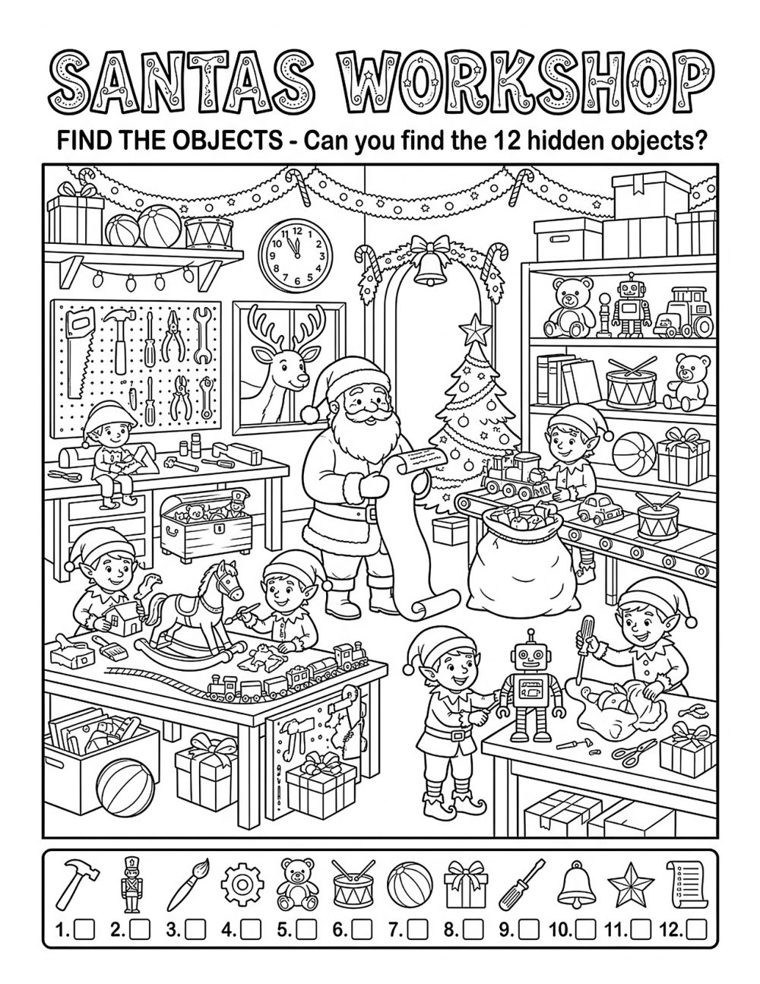
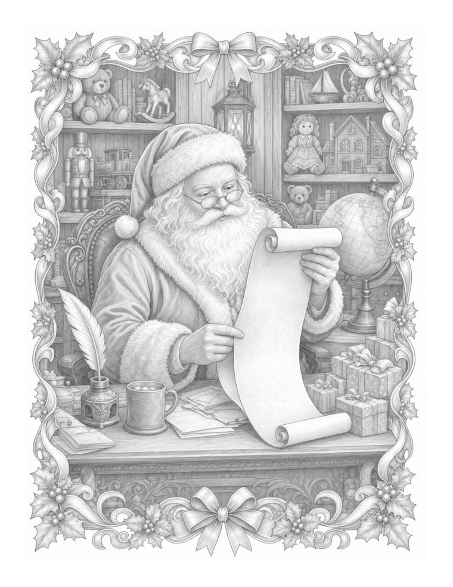
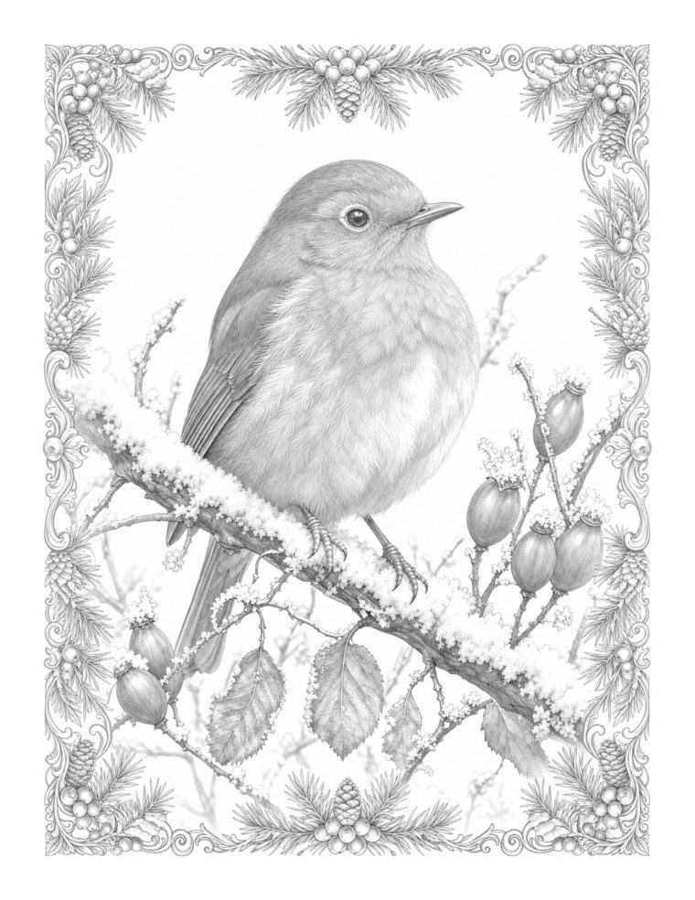
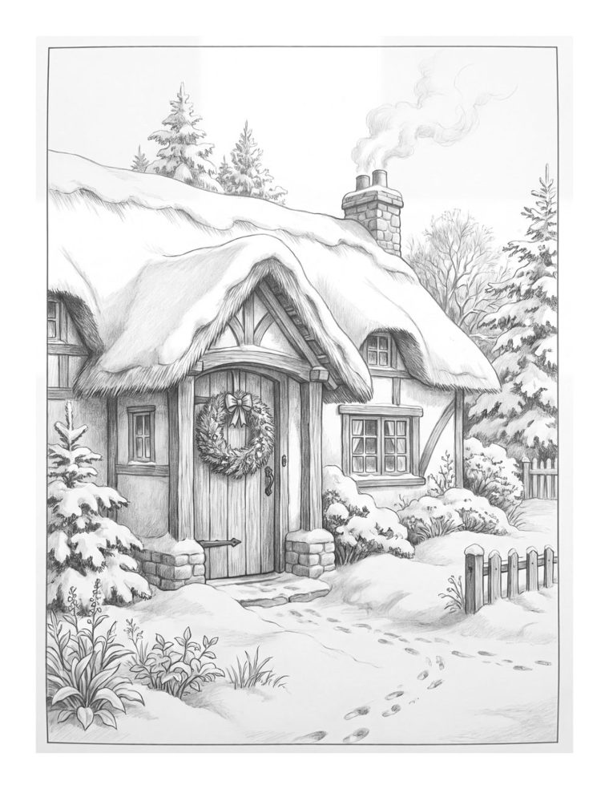

Ages 4 to 8
Christmas Seek and Find
Santa's workshop, snowy streets and reindeer stables, each hiding little things to find and colour.
Every set below is a real PDF of five pages from one of our Christmas books. Print it on ordinary Letter or A4 paper and you have a cosy afternoon sorted. If you love it, the whole book is on Amazon, ready for a stocking.

Santa's workshop, snowy streets and reindeer stables, each hiding little things to find and colour.

Shaded festive scenes for coloured pencils: Santa, robins, snowy cottages.

More detailed Christmas pages where the grey shading does the hard work.

Both volumes in one book, the best value for a keen colourist.
Plain printer paper suits crayons and pencils. For felt tips, use thicker paper or a spare sheet underneath.
The PDFs fit either. Choose "Fit to page" when you print.
Ages 4 to 8: Seek and Find. Teens and grown-ups: the Grayscale sets.
Print a page for everyone at the table. It keeps little hands busy while the dinner finishes.